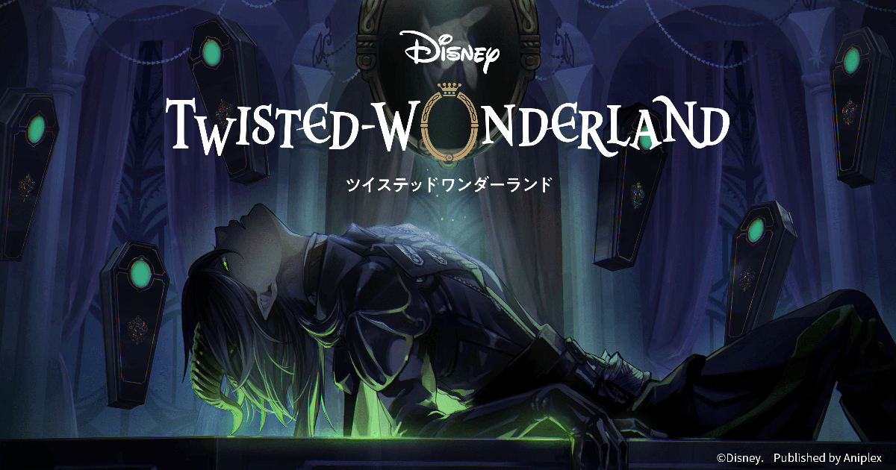
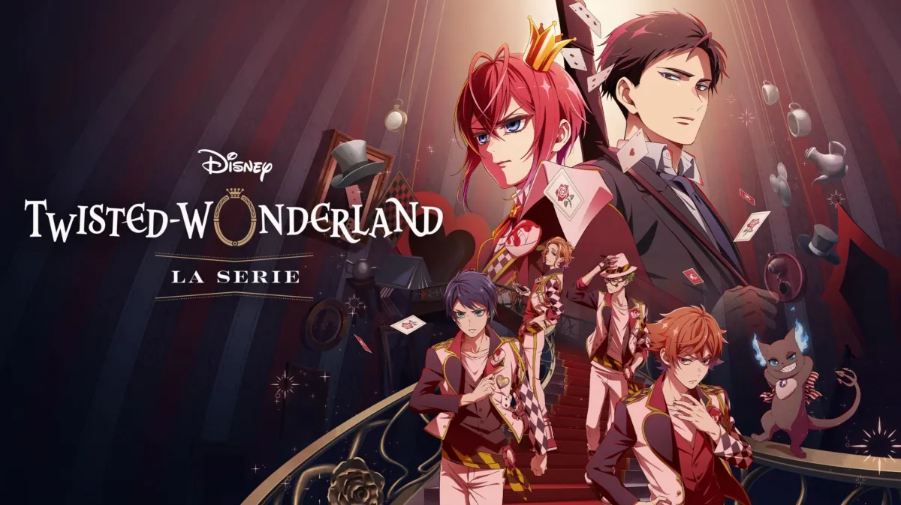
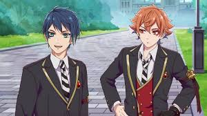

Historia

Libro 1: Todo comienza cuando Ace rompe una de las estrictas reglas de Heartslabyul y arrastra al protagonista y a Grim a un problema cada vez mayor. Mientras intentan arreglar el desastre, sale a la luz hasta qué punto Riddle gobierna su residencia con una obsesión enfermiza por el orden, lo que termina desencadenando un conflicto directo con todos los que lo rodean.

Libro 2: Con el torneo de Spelldrive a la vuelta de la esquina, varios estudiantes empiezan a sufrir accidentes sospechosos y el protagonista investiga junto a Grim. La verdad apunta a Savanaclaw y, en especial, a la ambición y frustración de Leona, cuya rivalidad con quienes parecen haber nacido con un destino mejor acaba convirtiendo el torneo en una batalla por orgullo y resentimiento.

Libro 3: Durante los exámenes finales, varios alumnos mejoran sus resultados de manera demasiado conveniente y pronto se descubre que Azul ha estado cerrando contratos peligrosos a cambio de favores o habilidades. Para recuperar lo que otros han perdido, el grupo debe enfrentarse a los planes de Octavinelle y desmontar la red de acuerdos con la que Azul intenta quedarse siempre en ventaja.

Libro 4: Durante las vacaciones de invierno, el protagonista y Grim terminan involucrados con Scarabia tras un encuentro con Jamil. Lo que parecía una visita tranquila se convierte en una trama de manipulación, secretos familiares y cansancio acumulado, hasta revelar el enorme peso que Jamil ha cargado durante años viviendo siempre a la sombra del despreocupado Kalim.

Libro 5: De regreso tras las vacaciones, Night Raven College se prepara para la competencia Song and Dance Championship del festival cultural, y Vil pone toda su obsesión por la perfección en ganar. Entre audiciones, entrenamientos agotadores y tensiones dentro del equipo, la presión por alcanzar una belleza y un éxito absolutos acaba empujando a Pomefiore a un punto de ruptura.

Libro 6: Después del SDC, Grim sufre un episodio extraño y desaparece, lo que lleva a una búsqueda que pronto se vuelve mucho más grave de lo esperado. La investigación termina conectando con Ignihyde, con el pasado de Idia y Ortho, y con una crisis de gran escala donde varios estudiantes deben unir fuerzas para enfrentarse a las consecuencias de los overblots y a una tragedia que llevaba tiempo gestándose.

Libro 7: TBA.

Libro 8: TBA.